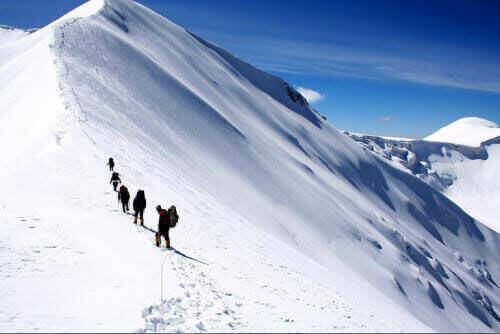
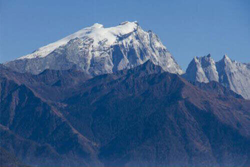
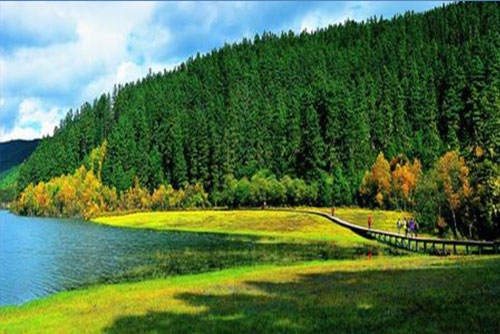
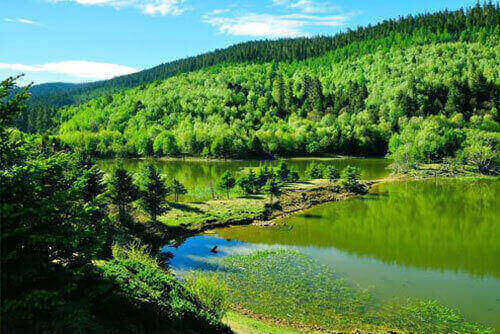
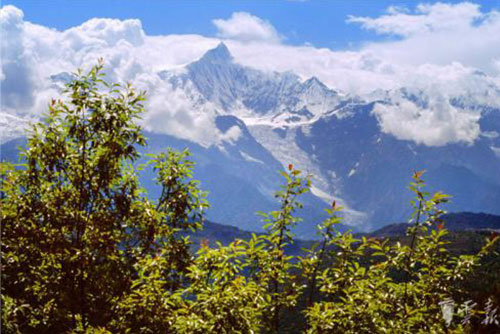
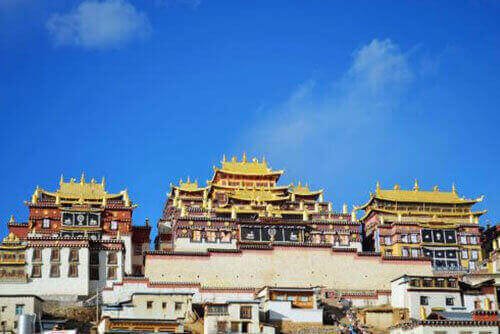
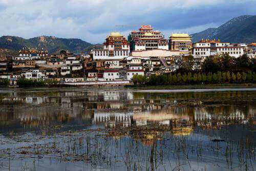

morly旅游网
香格里拉（Shangri-la），藏语意为“心中的日月”，别名中甸、香巴拉、人间天堂，是云南省迪庆藏族自治州下辖市及首府所在地，位于云南省西北部、青藏高原横断山区腹地，是滇、川、藏三省区交界地，也是世界自然遗产“三江并流”景区所在地。香格里拉因著名小说《Lost Horizen（消失的地平线）》中而被世人所熟知和向往，香格里拉藏区历史悠久，自然风光绚丽，是一个旅游的好地方。
香格里拉，那个传说中离天空中很近的地方，美在它的空旷苍劲，美在它的自在奔腾，美在它的古朴静谧，美在它的清新透明。它的美丽景点众多，有冰雪迷人的哈巴雪山，有山清水秀的普达措，有美丽仙境的梅里雪山，有佛文化深厚的松赞林寺等。哈巴雪山位于香格里拉市东南部，与玉龙雪山隔虎跳峡相望，是喜玛拉雅山造山运动及其以后第四纪族构造运动的强烈影响下急剧抬高的高山。“哈巴”为纳西语，意思是金子之花朵。哈巴雪山，山顶终年冰封雪冻，主峰挺拔孤傲，四座小峰环立周围，随着时令、阴晴的变化交请，雪峰变幻莫测，时而云蒸雾罩，宝鼎时隐时现；时而云雾缥缈，丝丝缕缕荡漾在雪峰间。保护区内分布着众多的高山冰湖群，大部分海拔都在3500米以上。其中，以黑海、圆海、黄海、双海风景最佳，随着时令、阴晴的变化交替，雪峰变幻莫测，时而云蒸雾罩，宝鼎时隐时现；时而云雾飘渺，丝丝缕缕荡漾在雪峰间，“白云无心若有意，时与白雪相吐吞”。白雪衬着蓝天，雄奇中透出无限的灵秀。哈巴雪山的山麓下是深深的哈巴大峡谷。一高一下，鬼斧神工，是人间难得的胜景。普达措国家公园，位于滇西北“三江并流”世界自然遗产中心地带，由国际重要湿地碧塔海自然保护区和“三江并流”世界自然遗产哈巴片区之属都湖景区两部分构成，以碧塔海、属都湖和弥里塘亚高山牧场为主要组成部分，属省级自然保护区，拥有地质地貌、湖泊湿地、森林草甸、河谷溪流、珍稀动植物等，原始生态环境保存完好。梅里雪山，是位于西藏察隅县东部与云南迪庆藏族自治州德钦县境云岭乡西部的一座南北走向的庞大的雪山群。它在藏区称卡瓦格博雪山，“梅里”一词为德钦藏语mainri汉译，意思是药山，因盛产各种名贵药材而得名。同时它也是雍仲苯教圣地，和西藏的冈仁波齐、青海的阿尼玛卿山、青海的尕朵觉沃并称为藏传佛教四大神山。噶丹·松赞林寺是云南省规模最大的藏传佛教寺院，也是康区有名的大寺院之一，还是川滇一带的黄教中心，在整个藏区都有着举足轻重的地位，被誉为“小布达拉宫”。该寺依山而建，外形犹如一座古堡，集藏族造型艺术之大成，又有“藏族艺术博物馆”之称。松赞林寺内历代珍品众多，有五世达赖、七世达赖时期的八尊包金释迦牟尼佛像、贝叶经、五彩金汁精绘唐卡、黄金及各种精美的鎏金或银质香炉、万年灯等。寺内有清泉淙淙，春夏不溢，秋冬不涸，并能常见一对金鹜出入。
香格里拉还有许多有民族特色的节日，有农历五月初五的赛马会，“丹巴市”、“格冬节”是两个宗教节日，纳西族的“二月八”、彝族的“火把节”等节日。在农历五月初五去香格里拉游玩除了可以观看传统的马术竞赛、表演等节目外，还有牦牛赛跑、牛拉杠等平日难得见到的项目。参赛的选手不仅有香格里拉本地的牧民，毗邻的芒康、乡城、稻城、理塘、巴塘、得荣等地区的马队也会前来参加比赛和表演。节日期间，当地居民举家出游，在山脚坝边搭帐篷，野炊、宴客。等到赛马会开始时，人们便齐聚在宽敞的草坪上，观看各地骑手的精彩表演。赛马有比速度、比步法、比马上枪旗、跑马拾物等。农历二月初八是纳西族最热闹的节日，以三坝白地乡最热闹。活动地点主要在风景秀丽的白水台。人们先杀鸡祭天，祭祀各种神灵，然后进行歌舞表演，热闹非凡。香格里拉还有许多比较特色的节日，我就不一一讲述了，希望你在空闲之余去香格里拉游玩的时候能恰逢过节的时候，能感受到当地特色的民族文化。
交通
航空:香格里拉机场占地225公顷，机场距中甸县城5公里，飞行区等级为4D。机场标高3280.83 米，可起降波音737型飞机。截止到2014年机场已开通香格里拉至昆明、成都、拉萨、重庆、北京、广州的航班。
公路:香格里拉市境交通主要以公路为主，主要有滇藏公路、川藏公路、康藏公路为干道的公路交通网络。
哈巴雪山
 普达措
 梅里雪山
松赞林寺
 内容整理至网络，如有侵权，请联系我们！1255394075@qq.com